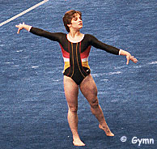

Mary Lou Retton (USA)
1984 Olympic AA Champion
 |
Medal Total
Olympic Games: 1 Gold, 2 Silver, 2 Bronze
Mary Lou was born on January 24, 1968, in Fairmont, West Virginia. Her first coach was Gary Rafokolsky, and in 1983 she transferred to Bela Karolyi's gym in Texas. A wrist injury kept her out of the 1983 World Championships, so the 1984 Olympics were her first major international competition. She competed in a few meets in early 1985 but didn't compete at the World Championships later that year.
Retton attended the University of Texas (where she met her husband), did occasional TV commentary, and gave motivational speeches. Today, Retton lives in Houston with her husband and four daughters.
Competition Results
1980
Capitol Cup: 2nd FX, 4th V
USGF Jr. Nationals: 7th AA, 1st V, 6th FX
1981
Capitol Cup: 2nd AA
Jr. Elite Nationals: 7th AA, 3rd UB
Jr. USA Championships: 5th AA
National Sports Festival: 2nd AA
1982
Jr. US Classic "A": 6th AA
Jr. USA Nationals: 2nd AA, 1st UB, 1st FX, 2nd V, 6th B
Sanlam Cup: 1st AA
USA-CHN Dual Meet: 8th AA, 1st V, 1st FX
USA-JPN Dual Meet: 1st Team, 2nd AA
USGF International Invitational: 12th AA
1983
American Cup: 1st AA
Chunichi Cup: 1st AA
Emerald Empire Cup: 1st AA
Pre-Olympics: 2nd AA, 1st V, 1st UB, 1st FX, 3rd B
Tokyo Cup: 1st V
US Classic: 2nd AA
USA Championships: 3rd AA, 2nd V, 2nd UB
1984
Albuquerque Journal Intl. Invitational: 1st AA
American Classic: 1st AA
American Cup: 1st AA
Caesar's Palace Invitational: 1st AA
Intl. Mixed Pairs: 3rd Team
Mardi Gras Invitational: 1st AA
Olympics: 2nd Team, 1st AA, 2nd V,
3rd UB, 3rd FX, 4th B
US Classic: 1st V, 1st UB, 1st FX, 4th B
USA Championships: 1st AA, 1st V, 1st FX, 3rd B, 4th UB
1985
American Cup: 1st AA, 1st V, 1st UB, 1st B, 1st FX
Intl. Mixed Pairs: 4th Team
This page was created on January 27, 2000
and was last updated on March 19, 2004.
© Gymn Forum